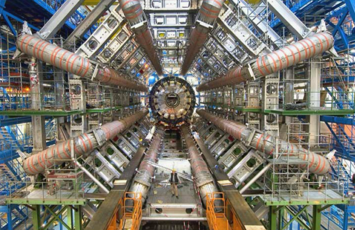

Největší stroj historie

Co byste si představili pod největším strojem, který kdy lidstvo stvořilo, a k čemu asi sloužil? K výrobě energie? K těžbě vzácných nerostů nebo jejich rafinaci? Tímto strojem je Velký hadronový urychlovač, což je přístroj, s jehož pomocí jsme schopni nahlédnout do minulosti, a to až do samotného počátku vesmíru, kde nám jsou odhaleny zákony a pravidla, která tvoří realitu kolem nás. Nachází se mezi francouzským pohořím Jura a ženevským jezerem ve Švýcarsku, je instalován v kruhovém tunelu o obvodu 27 kilometrů, což je pro představu vzdálenost, kterou byste museli ujít, abyste prošli přes celou Vídeň. Tento technologický kolos je projektem evropské organizace CERN, která se zabývá jaderným výzkumem a zahrnuje všechny vyspělé evropské státy.
Velký hadronový urychlovač je tedy největší urychlovač částic na světě. Můžeme si jej představit jako několik extrémně silných propojených magnetů, které jsou schopné vyslat částice rychlostmi blížícími se rychlosti světla, aby se tyto částice mohly v těchto nepředstavitelných rychlostech srazit a my mohli dále zkoumat, z čeho se tyto částice skládají na té úplně nejzákladnější úrovni. Podmínky, ve kterých dochází k těmto srážkám, jsou velmi podobné těm, jaké musely být ve vesmíru krátce poté, co došlo k velkému třesku. Aby vůbec mohl Velký hadronový urychlovač dosáhnout těchto nepředstavitelných rychlostí, potřebuje dva menší urychlovače částic, které vystřelí částice do Velkého hadronového urychlovače, kde poté dosáhnou ještě vyšších rychlostí.
Tento stroj již měl nesčetné přínosy pro jadernou fyziku a vědu. Díky němu jsme potvrdili existenci Higgsova bosonu, což byl klíčový objev, jelikož potvrdil velkou řadu teorií v oblasti částicové fyziky, například proč mají částice hmotnost. Skrz něj se také snažíme odhalit záhadnou temnou hmotu nebo prohloubit naše znalosti o hmotě a antihmotě. Všechny tyto poznatky by nám v budoucnu mohly pomoci rozklíčit problémy v rámci energetiky a dalších oblastí.
Velký hadronový urychlovač nezpůsobil pokrok jen v oblasti částicové fyziky, ale i v oblasti detekčních technologií, které mohou mít využití například v medicíně, ve výpočetní technice nebo v rozvoji supravodivých magnetů, což jsou magnety ochlazené na extrémně nízké teploty. Také měl podstatné přínosy v oblasti mezinárodní spolupráce, jelikož tento projekt spojuje tisíce vědců ze sta zemí světa.
Výstavba a provoz největšího stroje v historii samozřejmě není jednoduchá. Cena výstavby celého stroje se odhaduje zhruba na 7–9 miliard amerických dolarů. Tato investice pravděpodobně nebude mít velký finanční návrat, jelikož projekt má primárně hodnotu vědeckou a nikoli ekonomickou. Kritici namítají, že tyto peníze by byly lépe využity například pro rozvoj školství, zdravotnictví nebo zvrácení klimatické změny.
Velký hadronový urychlovač také zkonzumuje značné množství energie, a to až 750 gigawatthodin elektrické energie ročně. Tato spotřeba odpovídá 150 000– 200 000 domácnostem za rok, což je samozřejmě nemalé množství, které není jednoduché vyrobit.
Velký hadronový urychlovač je projekt až nepředstavitelného měřítka, který pomohl objasnit, dokázat a objevit několik teorií a poznatků. I přes ekonomickou a energetickou náročnost tohoto projektu je jeho přínos pro naši civilizaci a pro vědu nezanedbatelný.
Článek zpracoval: Jáchym Rak
Březen 2026ZDROJE